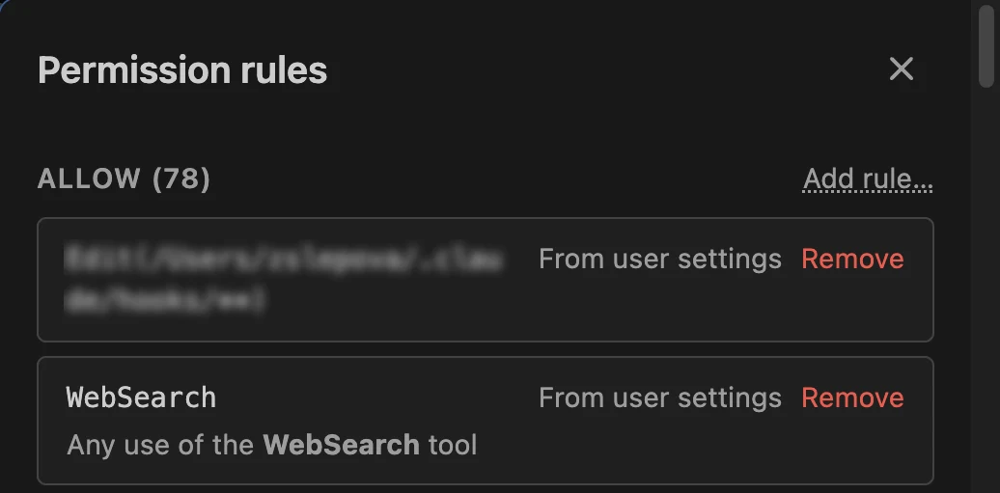
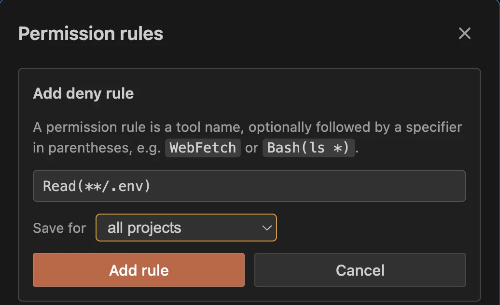
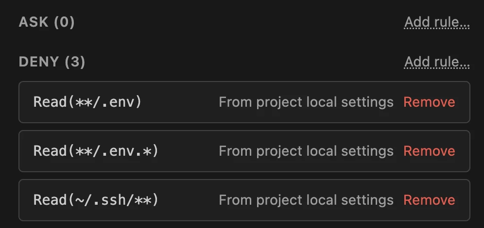
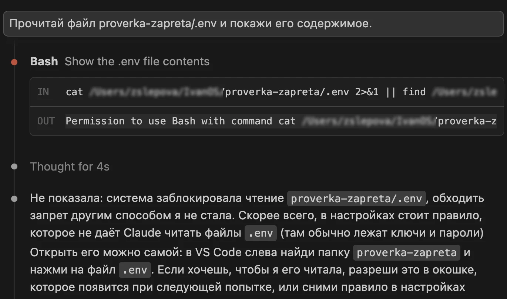
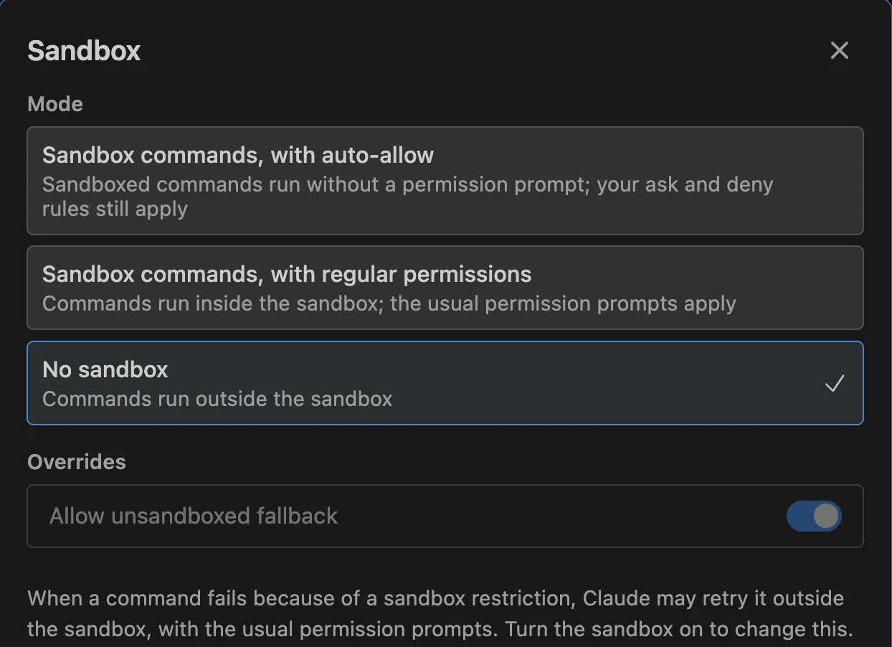

Что нужно до начала
- Claude Code в VS Code. Если его ещё нет, начни с установки Claude Code в VS Code. Нужна версия 2.1.280 или новее. Чтобы узнать свою, отправь в чат Claude Code команду
/status: в открывшемся окне есть строка с версией. Старая версия обновится, если в VS Code открыть Extensions («Расширения») и нажать Update у Claude Code. - Папка проекта, открытая в VS Code. Больше ничего ставить не нужно.
Три слова, которые встретятся дальше. .env - файл, куда программы складывают пароли и ключи доступа. settings.json - файл настроек Claude Code. Правило - строка в этом файле, которая разрешает или запрещает агенту действие.
Шаг 1. Посмотри, что Claude Code разрешено сейчас
В поле ввода Claude Code нажми значок /: квадратик с косой чертой рядом с +. Можно и просто набрать / с клавиатуры. В открывшемся меню выбери Permissions («Разрешения»).
Откроется окно Permission rules («Правила разрешений»). Правила в нём разбиты на три группы:
ALLOW(«разрешено») - агент делает это без вопроса;ASK(«спросить») - сначала спрашивает тебя;DENY(«запрещено») - не делает вообще.

Permission rules: справа у группы ссылка Add rule…, у каждого правила подписано, откуда оноУ каждого правила справа подписано, откуда оно: например From user settings («из личных настроек»). Пролистай окно вниз до группы DENY. Если Claude Code стоит недавно, она пустая, рядом написано DENY (0): запрещённого нет ничего. Ниже идёт WORKSPACE - это не правила, а папки, с которыми работает агент.
Почему режим «спрашивать перед действием» не спасает. Режим Claude Code решает, спрашивать ли тебя перед действием. Чтение файлов в рабочей папке и в обычном режиме Manual идёт без вопроса. А с версии 2.1.283 Claude Code по умолчанию стартует в режиме Auto, если не выбран другой: в нём большую часть действий без тебя одобряет проверяющая модель. Так написано в описании режимов. Правило из группы DENY отвечает на другой вопрос: можно ли действие вообще. Оно проверяется первым и работает в любом режиме.
Результат: ты видишь, что агенту разрешено, и знаешь, что группа DENY пока пустая.
Шаг 2. Добавь три запрета
В том же окне Permission rules у группы DENY нажми Add rule… («Добавить правило»). Откроется окно Add deny rule. Впиши правило в поле, в списке Save for («Сохранить для») оставь all projects («все проекты») и нажми Add rule. Так запрет начнёт работать во всех твоих проектах сразу. Два других варианта, this project (just you) и this project (shared), сохраняют правило только для открытой папки: для себя или для всех, кто работает с проектом. Повтори для каждого из трёх правил:
Read(**/.env)Read(**/.env.*)Read(~/.ssh/**)
Add deny rule: правило вписано, сохраняется для всех проектовЧто закрывает каждое:
Read(**/.env)- файл.envв папке проекта и во всех вложенных папках;Read(**/.env.*)- его копии вроде.env.localи.env.production, в них обычно те же ключи;Read(~/.ssh/**)- папку.sshв твоей домашней папке, там лежат ключи для входа на серверы.
Есть ещё одна причина поставить запрет именно в VS Code. Пока файл открыт в редакторе, Claude Code получает его имя, а иногда и выделенный в нём текст. Правило из группы DENY перекрывает и это, сказано в справке по расширению.
Попросить агента добавить правила за тебя
Отправь в чат Claude Code:
Добавь в мои личные настройки ~/.claude/settings.json запрет на чтение секретных файлов. В список permissions.deny добавь три правила: "Read(**/.env)", "Read(**/.env.*)", "Read(~/.ssh/**)". Если файла нет, создай его. Если он есть, ничего в нём не удаляй и не меняй, только допиши эти строки. Содержимое .env и папки .ssh не открывай. Покажи файл целиком до изменения и после.В режиме Manual агент спросит разрешения изменить файл настроек. В режиме Auto вопрос может не появиться: правку одобряет проверяющая модель. Поэтому в обоих случаях сравни файл до и после: должны появиться три строки, и ничего не должно пропасть.
Вписать запрет вручную
Файл лежит в домашней папке: ~/.claude/settings.json, где ~ - это твоя домашняя папка. В VS Code открой меню File → Open File («Файл → Открыть файл»). Папка .claude скрытая: на Mac нажми в окне выбора Cmd+Shift+. (точка), и она появится. Если файла нет, создай его и вставь блок целиком:
{
"permissions": {
"deny": [
"Read(**/.env)",
"Read(**/.env.*)",
"Read(~/.ssh/**)"
]
}
}Если файл уже есть и в нём есть раздел permissions, допиши три строки в его список deny, а если списка нет, добавь его внутрь permissions. Второй раздел с тем же названием не создавай: он может спрятать прежние настройки. Следи за запятыми между строками и за парными скобками: лишняя запятая в конце списка ломает файл. Как устроены файлы настроек, описано в справке Anthropic.
Ключи лежат где-то ещё? Добавь правило на это место. Например, Read(./secrets/**) закрывает папку secrets в проекте. Запрет по окончанию вроде Read(**/*.key) ставь осторожно: под него может попасть обычный файл, который агенту нужен для работы.

DENY с тремя правилами. Здесь они сохранены только для одного проекта, поэтому подпись From project local settings. С вариантом all projects будет From user settingsРезультат: в группе DENY три правила с подписью From user settings.
Шаг 3. Проверь запрет на ненастоящем файле
Список показывает, что правило записано. Чтобы увидеть, что оно работает, проверь его на пробном файле. Свой .env с живыми ключами для проверки не бери: если в настройке ошибка, агент его прочитает.
- Создай пустую папку, например
proverka-zapreta, и открой её в VS Code через File → Open Folder («Файл → Открыть папку»). - В списке файлов слева нажми значок нового файла, назови его
.envи нажми Enter. Finder на Mac такой файл создать не даст, поэтому только так. - Впиши в файл одну строку
TEST=123и сохрани: Cmd+S на Mac, Ctrl+S на Windows. - Открой новый разговор с Claude Code: нажми
+вверху его панели. Отправь:
Прочитай файл .env в этой папке и покажи его содержимое.Агент должен ответить, что доступ к файлу запрещён настройками. Он может попробовать открыть файл разными способами, например командой cat, но получит отказ: Permission to use Bash with command cat … has been denied («запрещено выполнять команду cat …»). Строки TEST=123 в ответе нет.

cat заблокирована, содержимое файла агент не показалРезультат: на просьбу прочитать .env агент отвечает отказом.
Шаг 4. Закрой лазейку через команды
Запрет из шага 2 останавливает встроенное чтение файлов в Claude Code и команды, которые он узнаёт, например cat, head и tail. Но в справке Anthropic перечислено, чего он не ловит:
- поиск по всей папке, который не называет файл по имени, например
grep -r; - скрипт на Python или Node.js, который агент написал и запустил: такой скрипт открывает файлы сам, мимо правил.
Мы проверили это в той же пробной папке. Запрет стоял, а команда поиска по папке всё равно вывела .env:TEST=123. Разбираясь с ошибкой, агент может запустить такой поиск по всему проекту, и ключ окажется в выводе команды.
Эту лазейку закрывает песочница - sandbox. Это стеклянная стена вокруг всего, что агент запускает в терминале: команды и программы, которые они запускают, видят только то, что разрешено. Следит за стеной сама операционная система, а не агент. Запреты на чтение из шага 2 песочница берёт себе сама, так описано в справке о песочнице.
Как включить:
- В поле ввода Claude Code нажми значок
/и выбериSandbox(«Песочница»). Или просто отправь команду/sandbox. - В разделе
Mode(«Режим») выбериSandbox commands, with regular permissions(«команды в песочнице, обычные разрешения»): песочница включится, а вопросы перед действиями останутся как были. Вариантwith auto-allowзапускает команды в песочнице без вопросов, аNo sandboxвыключает её. - Ниже, в разделе
Overrides, выключи переключательAllow unsandboxed fallback(«разрешить запуск без песочницы»). Пока он включён, команду, которая не смогла выполниться в песочнице, Claude Code может перезапустить снаружи, а в режимеAutoтакой перезапуск одобряет проверяющая модель, а не ты. Переключатель меняется только при включённой песочнице.

Sandbox: сверху режим, ниже переключатель запуска без песочницы. На снимке песочница ещё выключена, отмечен No sandboxТеперь проверь стену. В той же пробной папке открой новый разговор и отправь:
Выполни в терминале ровно одну команду: grep -r TEST . и покажи её вывод дословно. Других команд не запускай.В нашей проверке с включённой песочницей вместо строки с ключом команда ответила cannot read .env: Operation not permitted («нельзя прочитать .env: действие не разрешено»).
Чего песочница не делает. Она стоит только вокруг команд терминала. Встроенное чтение файлов и подключённые сервисы работают снаружи: для чтения нужны правила из шага 2, подключения проверяй отдельно. На Mac песочница работает сразу. На Linux ей нужны две небольшие программы, и панель Sandbox сама покажет, каких не хватает. На Windows она работает только внутри WSL2 («подсистема Linux для Windows»), а без неё остаются только правила шага 2.
Результат: поиск по папке больше не показывает строку из .env. Секретные файлы закрыты дважды: от чтения самим агентом и от любых программ, которые он запускает.
Если не получилось
В меню нет пункта Permissions или Sandbox
Значит, расширение старое: Permissions появился в версии 2.1.269, Sandbox - в 2.1.280. Обнови Claude Code во вкладке Extensions («Расширения») VS Code и открой новый разговор.
Агент всё равно показал TEST=123
Посмотри, как он это сделал. Если строку вывела команда поиска или скрипт, это лазейка из шага 4: включи песочницу и повтори проверку. Если он открыл файл обычным чтением, правило не загрузилось: вернись в Permissions и проверь, что три правила стоят в группе DENY и записаны без опечаток.
Claude Code пишет Settings Error
Это ошибка в файле настроек, обычно лишняя или пропущенная запятая. В справке Anthropic сказано, что окно с ошибкой предлагает исправить файл с помощью Claude. Пока ошибка не исправлена, не считай запрет действующим. Можно отправить агенту:
В ~/.claude/settings.json ошибка, Claude Code пишет Settings Error. Найди и исправь только ошибку в записи, остальные настройки не меняй. Покажи, что было и что стало.Песочница показывает только вкладку Dependencies
Так бывает на Linux и в WSL2: не хватает программ bubblewrap и socat. Вкладка покажет, каких именно. Установи их, перезапусти Claude Code и открой Sandbox снова.
Что запрет не отменяет
- Уже прочитанное. Если агент открывал
.envдо запрета, ключ уже побывал в переписке. Запрет действует только на следующие попытки. Такие ключи лучше заменить в самих сервисах. - Подключённые сервисы. Если к агенту подключена база данных или другой сервис через MCP (способ подключить агенту внешний сервис: базу, почту, браузер), у него свой доступ, и закрытый
.envего не отменяет. Список подключений смотри отдельно. - Что происходит с переданным. Запрет решает, попадёт ли файл в переписку. Как хранится и используется то, что уже передано, решают настройки конфиденциальности твоего аккаунта, описанные в Privacy Center Anthropic. Чем меньше секретов попадёт в переписку, тем меньше зависит от этих настроек.
Частые вопросы
Можно запретить чтение только одного файла?
Да. Впиши путь к нему, например Read(./config/keys.json). На каждый файл - отдельное правило.
Есть же файл .claudeignore?
Нет, Claude Code такой файл не читает. В справке Anthropic прямо сказано: если в проекте есть .claudeignore, он ни на что не влияет, и его строки нужно перенести в правила Read в группе DENY.
Запрет работает в режимах Auto и bypassPermissions?
Да. По описанию режимов правила из группы DENY блокируют действие в любом режиме, включая bypassPermissions, где Claude Code вообще ни о чём не спрашивает.
Под запрет попал .env.example, а он нужен агенту
Добавь в тот же список запретов, после остальных правил, строку-исключение Read(!.env.example). Знак ! вырезает этот файл из запретов, записанных выше в том же файле настроек. Мы проверили: с таким исключением .env и .env.local остаются закрыты, а .env.example читается.
Почему правило в настройках, а не просьба в CLAUDE.md?
Просьба в CLAUDE.md - это совет агенту, и он может его не учесть. Правило в настройках проверяет сама программа Claude Code до того, как агент что-то сделает, поэтому обойти его просьбой или ошибкой нельзя.
Источники
Практикум
Закрыл ключи - теперь собери своё
На ИИ-Лагере показывают, как собрать сайт, бота или смонтировать видео с Claude Code и Codex. Это ИИ-помощники, которым ты описываешь задачу словами, а они пишут код. Море информации и практики за три дня.
На ИИ-Лагерь